数据下载及处理
页面介绍
GEO（Gene Expression Omnibus）是 NCBI 中公共高通量基因数据共享平台
Link：Home - GEO - NCBI
如下是进入搜索的一个关于甲状腺癌的文件
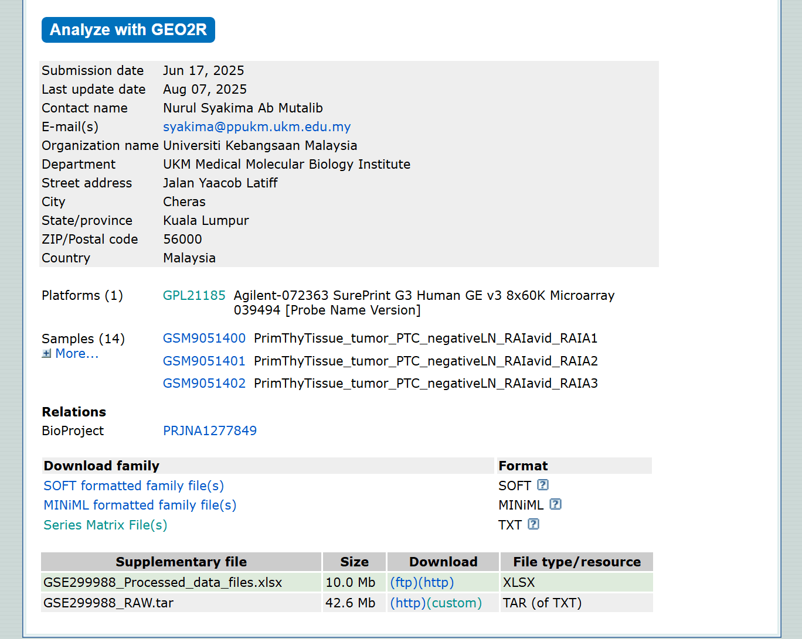
- Platforms：（GPLxxxx）平台编号对应的检测技术体系，包含了探针序列与基因的对应关系，是后续进行探针 ID 转换为基因 Symbol/Ensembl ID 的必需文件，直接影响下游功能富集分析的准确性。
- Samples：（GSMxxxx）样本列表，可以查看每一个样本信息
- Relations：关联信息，可找到该项目的其他数据
- Download family：
- SOFT formatted family file(s) 、 MINiML formatted family file(s)：包含原始信号和所有元数据，信息非常全，但格式比较复杂，适合进阶分析。
- Series Matrix File(s)：GEO 整理好的表达矩阵，TXT 格式，直接就能用。里面的行是基因或探针，列是样本，每个单元格是对应的表达量。
- Supplementary file：作者上传的补充材料，未经过GEO统一处理的文件，是作者对原数据的个性化解读加工。
Platform里面的GPL注释表和文件是注释信息，探针ID 到 基因。而Download family里面的文件是表达量数据，只能确定探针中的表达值。
需要Download full table…
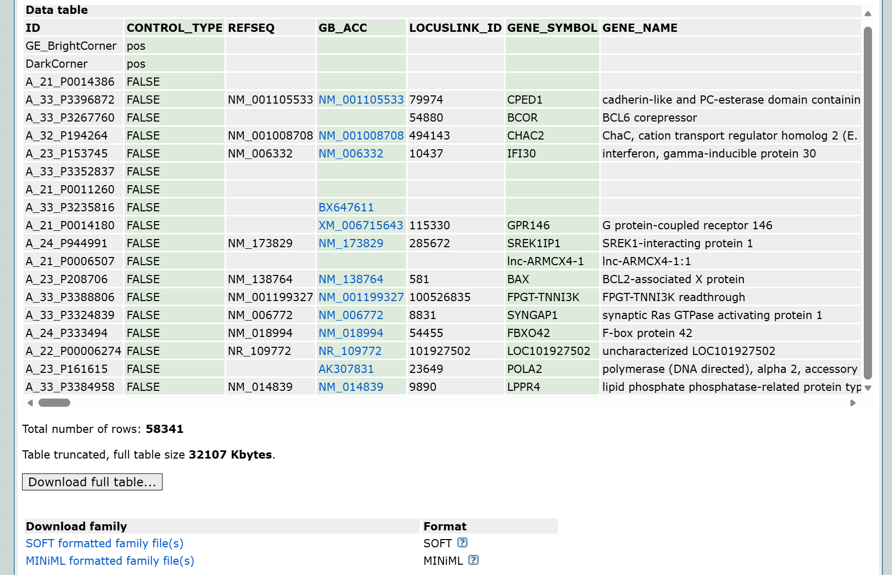
GEO数据处理
下载Download family处的Series Matrix File(s)文件和Platform里的full table文件。
- 安装BiocManager包，再用BiocManager安装其他包
|
|
GEO非symbol基因名的处理
常见标识类型：
Gene Symbol直接对应基因名的标识；Entrez ID是NCBI Entrez 数据库的基因编号；RefSeq Accession是NCBI RefSeq 数据库的转录本编号，如 NM_000546；ENSEMBL ID对应Ensembl 数据库的基因 / 转录本编号，如 ENSG00000141510；GenBank Accession（GB ACC）对应GenBank 数据库的核酸序列编号，如 U94788。
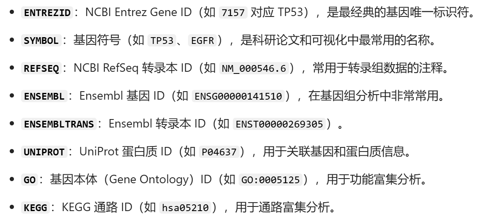
如GSE200539的GPL文件中不包含symbol文件
- Platforms进入的网页下可能有的没有Download full table…，则需要下载table下方的Download family中的SOFT formatted family file(s)，下载为soft.gz文件
|
|
Affymetrix原始数据整理
上述的GEO处理基于Download family中的Series Matrix File(s)下载后处理，这是已经预处理过的表达矩阵数据。通常是经过背景校正、归一化和探针注释后的表格。无法验证或调整预处理过程（如归一化方法）。
因此有时选取Supplementary file(s)里面的RAW原始文件，是原始的 CEL 文件压缩包，包含芯片扫描得到的原始荧光信号数据。
如上述的GSE200539的Supplementary file里面的GSE200539_RAW.tar
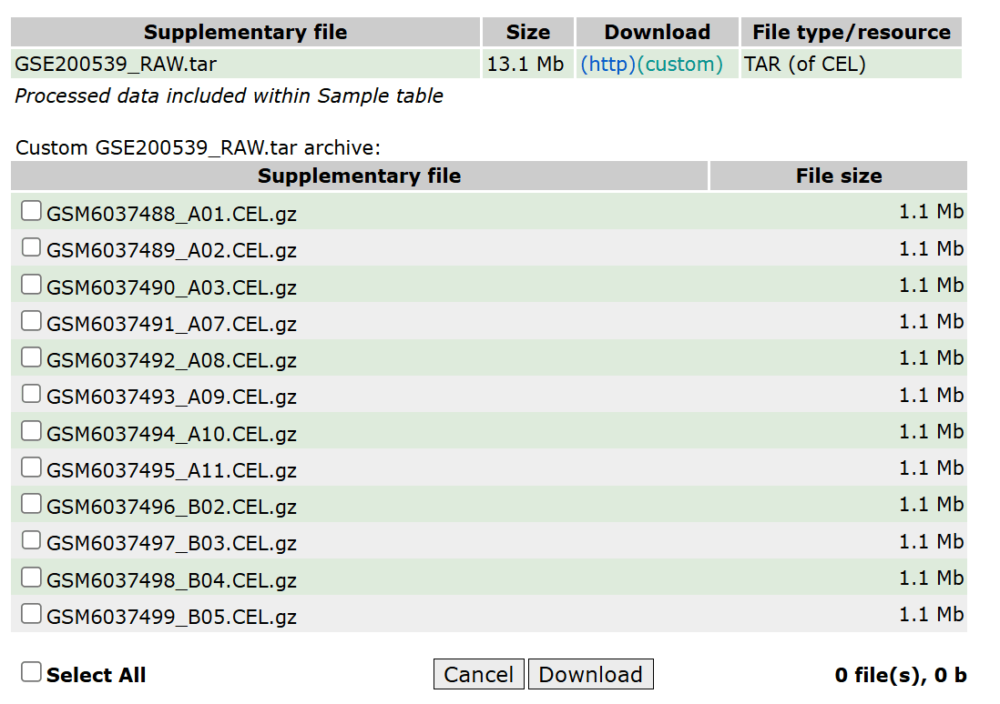
|
|
illumina原始数据处理
有的GEO标准化后的Series Matrix File包含负值，因此需要进行原始数据处理，此处选取GSE68004进行分析。选择原始的non-normalized数据进行处理。
|
|
Agilent原始数据处理
选取GSE211806进行处理
|
|
GEO高通量数据
先前选取的都是GEO中的Expression profiling by array（芯片表达谱），通过荧光强度判断表达量。
而GEO中Expression profiling by high throughput sequencing（高通量测序表达谱，通常指 RNA-seq）将样本 RNA 反转录建库后，直接进行大规模测序，通过比对基因组计数 reads 数。
芯片表达谱是对RNA与探针结合的荧光进行测定，反映相对值。而高通量测序是对RNA基因片段数量进行测定，反映绝对值。
高通量数据除了可以富集分析外，还可做可变剪接、融合基因、新转录本发现。
选取GSE309139高通量数据为例，下载Series Matrix File(s)与GSE309139_raw_counts.txt.gz，原始的counts数据需解压
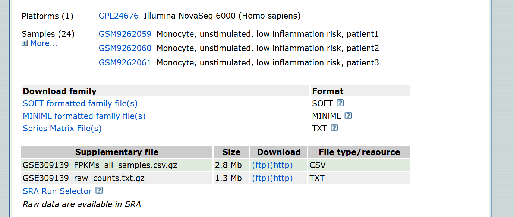
|
|
其他
实际分析时，有的GEO数据格式并不像上述那样标准，这里整理遇到的一些数据怎么整理成exp。
下面是高通量数据，但是Supplementary file是 _RAW.tar，参考GSE252513，这个tar文件里面是每个样本的txt.gz文件。
|
|
差异分析
差异分析：芯片数据——array limma ；高通量——count DESeq2
limma芯片数据差异分析
|
|
火山图
接上述limma差异分析
如下是下述代码的DEG结果数据框图：
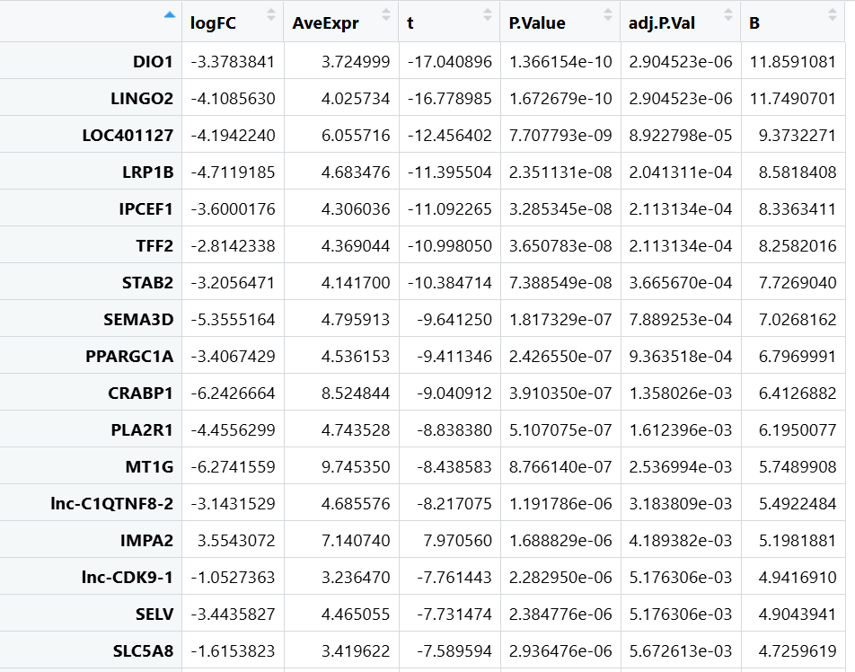
|
|
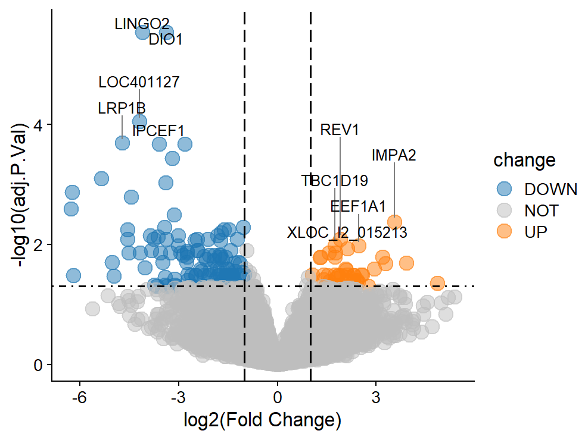
热图
接上述火山图
|
|
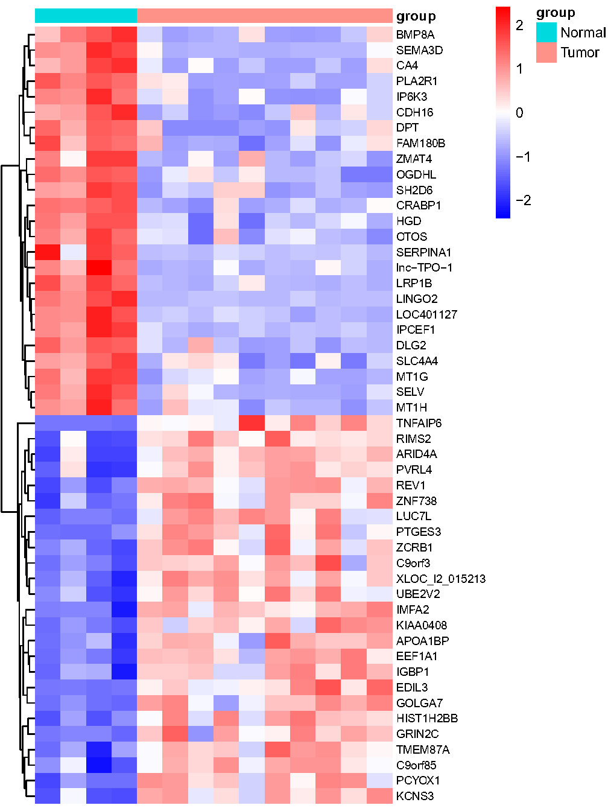
高通量数据分析
先前GEO高通量数据处理时运行得到degs那一步，仅在得到res1差异结果后增加一步，将其进行txt文件导出，作为DEG结果，如下是得到degs的代码：
|
|
这是最后选出的degs表格样式：
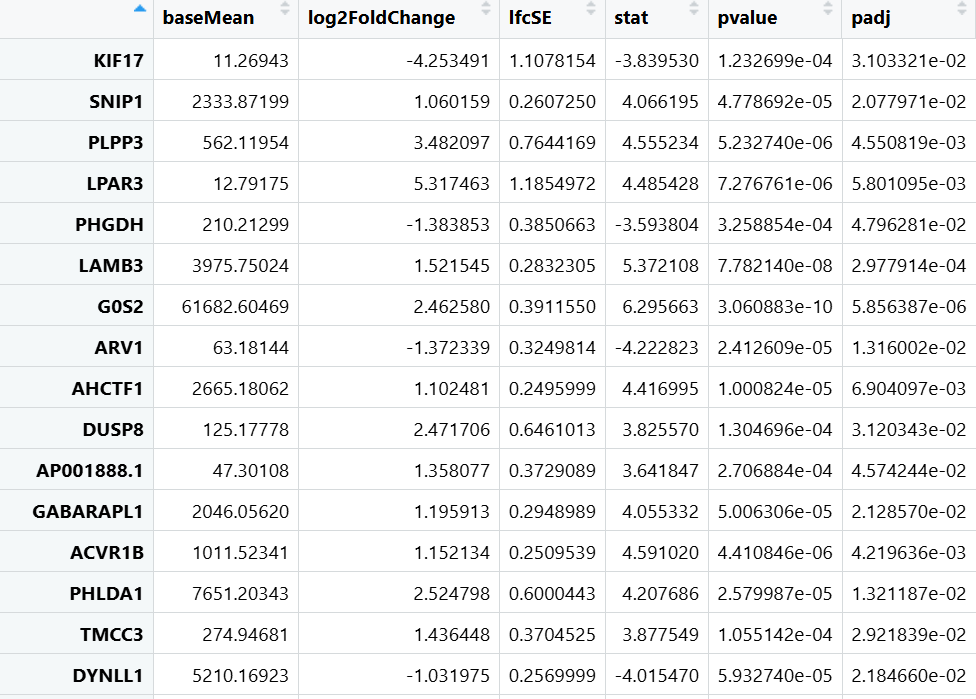
- 根据筛选出来的表格样式，使用导出的DEG1.txt进行火山图和热图绘制，与之前limma部分一致，注意纵轴名的相应更改即可。
如下是limma后进行的火山图与热图分析结果：
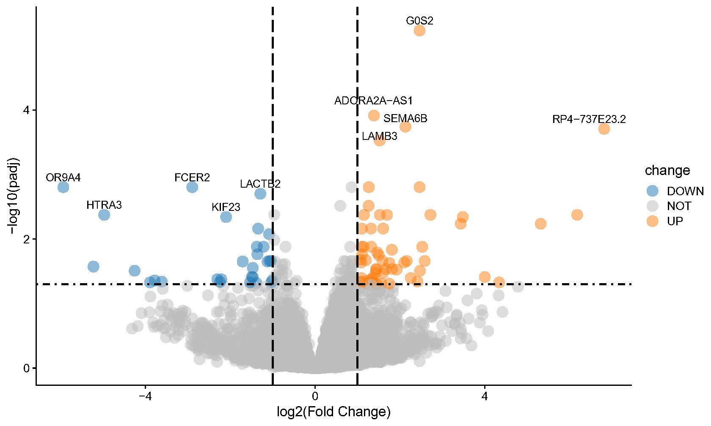
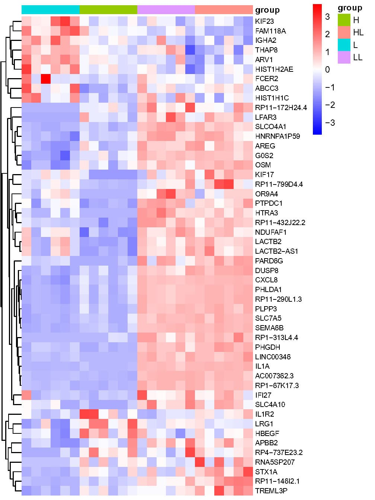
富集分析
在先前差异分析得到的差异表格基础上进行，先前差异分析已经注释好的DOWN、UP或NOT的数据，即DEG2.txt
GO 富集：关注基因的功能属性（这个基因干什么、在哪里、怎么参与过程）
KEGG 富集：关注基因所在的通路 / 代谢网络（这些基因一起参与哪条通路、哪条代谢链）
|
|
GO富集
上述完成ID转换后得到gene_entrez2，再进行GO富集
|
|
KEGG分析
也是紧接上述完成ID转换后得到gene_entrez2进行
|
|
GSEA分析
GSEA分析（Gene Set Enrichment Analysis，基因集富集分析），与差异富集分析不同。
GSEA 不是看 “差异显著的基因” 富集到哪些通路 / 功能，而是看整个基因列表（不分差异与否） 中，某一 “基因集”（比如某条 KEGG 通路的所有基因）是否整体偏向于列表的顶端或底端，以此判断该基因集是否被显著激活 / 抑制。
GSEA官网：GSEA
如下是进入页面后的Database页面，右侧的 Human Collections 就是给人类研究用的 10 类基因集
H：特征基因集，把多个相似基因集合并，代表最核心、最清晰的生物学状态 / 过程，快速抓最关键的通路，结果干净、易解释。
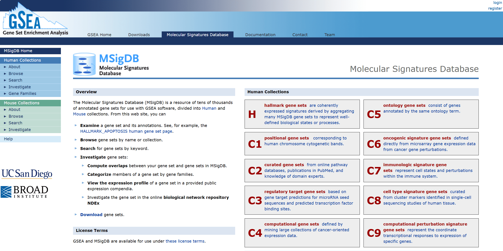
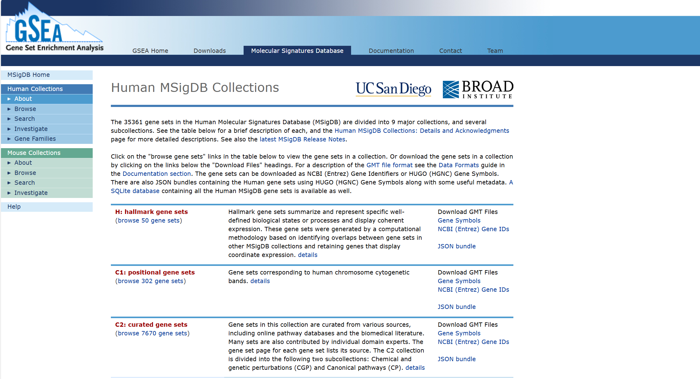
选取H的右侧Gene Symbols进行下载，下载得到gmt文件
常规GSEA
|
|
如下是富集分析得到的结果res：
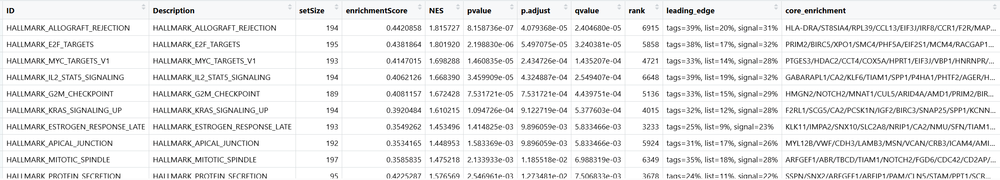
enrichmentScore (ES)：原始富集分数
NES (Normalized ES)：标准化富集分数，大于0表示上调
rank：该基因集在所有结果中的排名
leading_edge：核心富集基因的标签。tags：核心基因占该基因集的比例；list：占全基因列表的比例；signal：富集信号强度
core_enrichment：核心富集基因列表
以下是分析结果图：
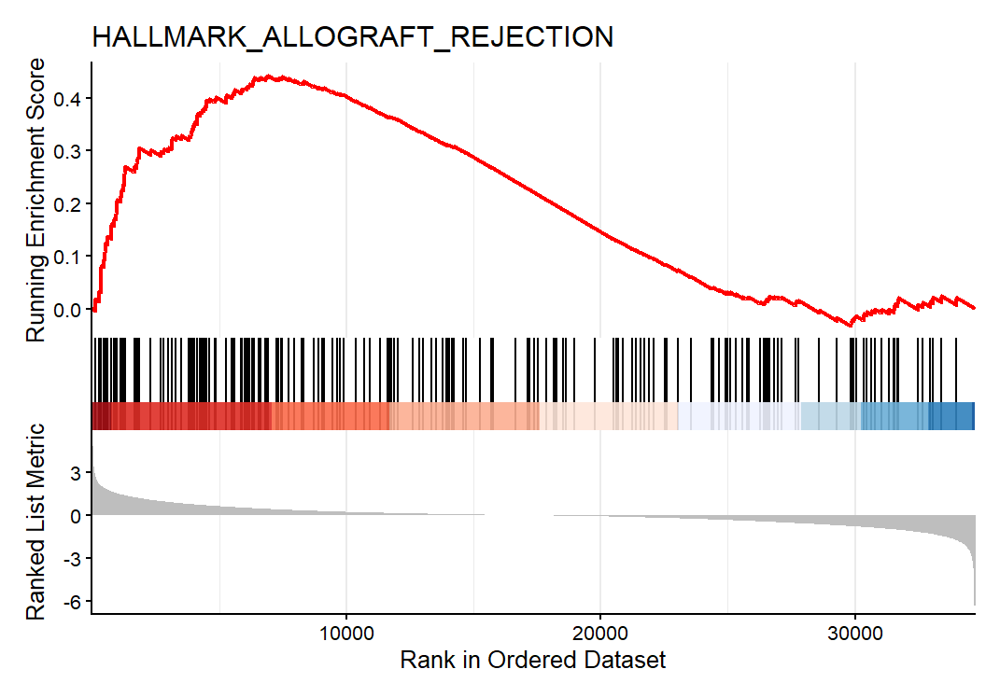
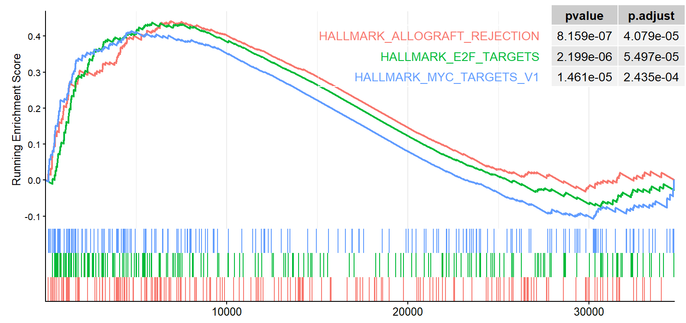
单基因GSEA
单基因GSEA分析可以明确一个基因表达的变化时通路的变化情况
|
|
如下是单基因GSEA分析的作图结果：结果曲线为正即为该通路上调
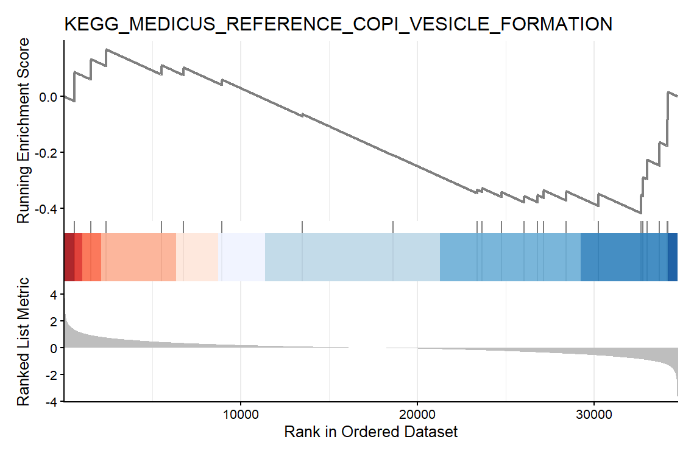
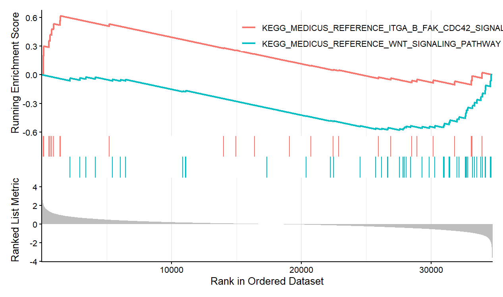
韦恩图
选取GeneCards
Link:GeneCards - Human Genes | Gene Database | Gene Search
选取mitophage线粒体自噬相关的蛋白基因，保存为excel
同样地再选取ferroptosis铁死亡相关的蛋白基因，保存为excel
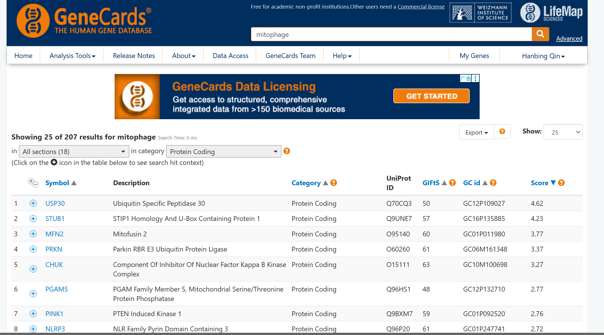
|
|
最终VN图结果如下：
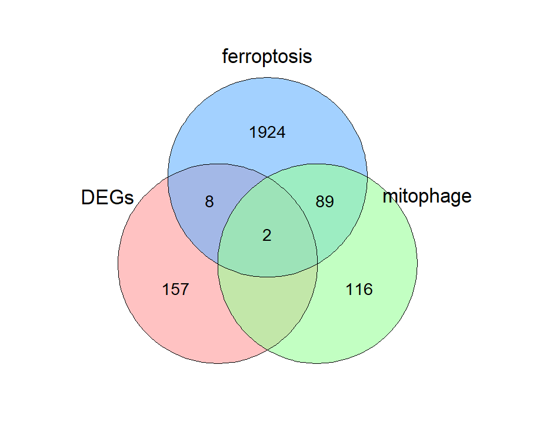
箱线图
|
|
最终合并的结果：
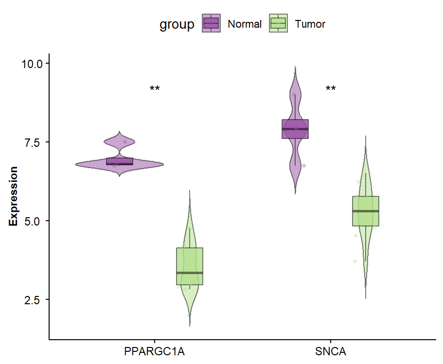
WGCNA
WGCNA（Weighted Gene Co-expression Network Analysis，加权基因共表达网络分析） 是一种无监督系统生物学方法，核心是从基因表达数据中挖掘协同表达的基因模块，并将模块与表型 / 临床性状关联，最终找到驱动表型的关键基因（Hub Gene）
解决的问题：从海量基因表达数据中，把 “杂乱无章” 的基因按表达模式相似性分组（模块），并找到与你关心的表型（疾病、性状、处理等）最相关的模块与核心基因。
加权网络：不用硬阈值（如 0.8）一刀切，用软阈值 β给相关性加权，更符合真实生物网络的无尺度分布。
软阈值：软阈值就是用一个幂次 power（比如 6、8、10）把相关系数做一个非线性变换：
由此把强相关保留放大，弱相关压缩到接近 0
无标度网络：一种节点连接度分布极不均匀的网络，极少数节点拥有大量连接，绝大多数节点只有很少的连接。选软阈值的核心目的，就是让构建的基因共表达网络尽可能接近无标度特性，能精准识别出真正的核心基因和共表达模块
模块 - 表型关联：直接把基因模块和临床 / 表型数据做关联，快速定位功能单元。
拓扑重叠矩阵（TOM）：邻接矩阵只看两个基因之间的直接连接强度，但真实的生物网络中，基因间的关系是 “多维度” 的。而 TOM 能把直接连接 + 间接连接 结合起来，更贴近真实的生物调控关系。
拓扑重叠分数（0~1）：
$$ TOM_{ij}=\frac{l_{ij}+a_{ij}}{min(k_i,k_j)+1-a_{ij}} $$$$ a_{ij}:基因 i 和 j 的直接邻接值 $$$$ k_{i}:基因 i 的总连接度（邻接矩阵中第 i 行所有元素的和，代表 i 和其他所有基因的直接连接总和） $$$$ l_{ij}:基因 i 和 j 的共同连接数（所有同时和 i、j 强连接的基因数量，比如 i 和 k 强连、j 和 k 强连 → k 就是 i 和 j 的共同连接） $$$$ min(k_i,k_j):取 k_i 和 k_j 的较小值，避免 “高连接度基因” 主导结果 $$Hub 基因挖掘：在模块内找连接度最高、最核心的基因，作为候选靶点。
核心思想：基因表达模式相似 → 功能相关 → 聚成模块（Module）；模块整体与表型相关 → 该模块参与表型调控 → 模块内Hub 基因是关键调控因子。
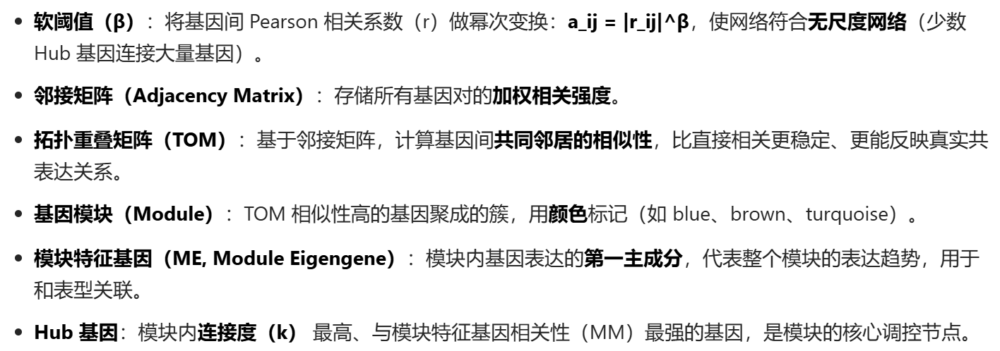
相关文章帮助理解：加权基因共表达网络分析 (WGCNA, Weighted correlation network analysis) - 简书
加权基因共表达网络分析 (WGCNA）| 共表达网络模块构建 |生物信息学数据分析必备技能
WGCNA官方教程网站：Tutorials for WGCNA R package
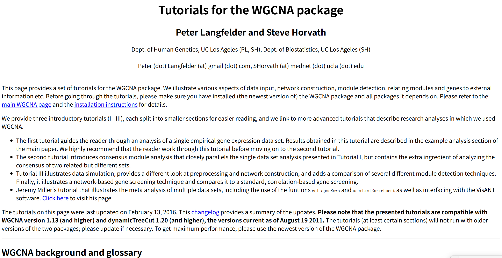
示例分析
选取官网的第一个示例来分析，下载每一部分的R脚本
FemaleLiver-01-dataInput
|
|
如下是完成的第一次样品聚类和剔除异常值后的样品聚类+临床热图作图：
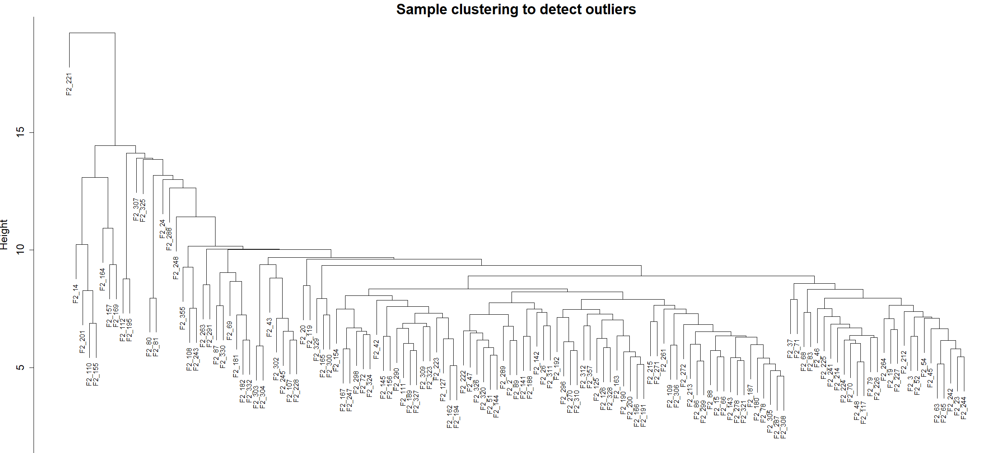
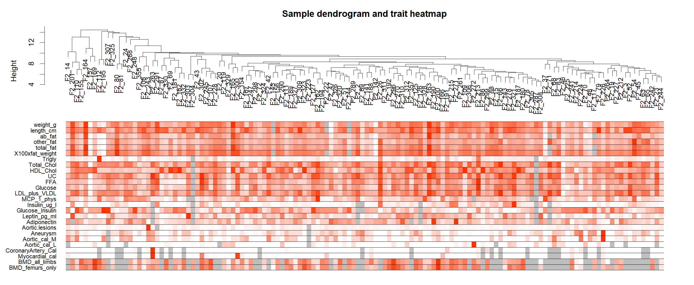
FemaleLiver-02-networkConstr-auto
自动、一步网络构建和模块检测
|
|
FemaleLiver-02-networkConstr-man
分步网络构建和模块检测
|
|
FemaleLiver-02-networkConstr-blockwise
基因较多时使用
|
|
FemaleLiver-03-relateModsToExt
|
|
FemaleLiver-04-Interfacing
|
|
FemaleLiver-05-Visualization
|
|
FemaleLiver-06-ExportNetwork
|
|
实际分析
此处选取处理GSE84844，提前下载并完成到前期的数据处理，得到GSE84844.rda文件
|
|